Engineering Laboratory Manual · Production Engineering
ELA 300 Level Practical Report Companion
A clear, submission-ready reading of Experiments 301–308, developed from the laboratory manual with the theory, apparatus, procedure and reflective discussion kept together in one easy-to-navigate site.
300 LevelProduction Engineering8 experimentsTheory-led · no fabricated readings
Report guide
A structured manual, not a pile of pages.
This website turns the supplied ELA manual into eight connected reports. Each report follows the requested order: aims, objectives, apparatus, theory and diagrams, procedure, precautions, discussion, conclusion, questions, learning outcomes and special questions.
Submission note. No experimental readings or completed calculations were provided with the manual images. To keep the report academically honest, no values, results, tables or graphs have been invented. The sections labelled Data / table of values and Graph therefore state what should be recorded without presenting made-up results.
08
Experiments covered from 301 to 308
09
Core report headings retained per experiment
24
Selected, readable technical figures
0
Fabricated measurements or plotted results
How to use it
Choose an experiment from the top bar or the contents card.
Read the theory before the procedure; the discussion explains what the instruments are expected to show and why.
Insert the actual readings from the laboratory sheet in the blank record section if your lecturer requires a completed practical report.
Use Print current to print only the experiment currently on screen. The diagrams are local files, so the site remains usable without an internet connection.
Scope and editorial note
What has been kept, and what has been improved
The original manual supplies the practical intent, apparatus and sequence of operations. The wording here has been carefully expanded to make the engineering relationships explicit: what each component does, what a measurement means, and how the observation connects with production systems. Spelling, broken OCR and compressed instructions have been normalised, while the original experiment numbers and technical focus have been retained.
Figures are included only where they explain a circuit, machine connection or signal concept. Blurred page photographs have not been placed in the report as if they were reliable diagrams; instead, the readable diagram extracts supplied with the manual reference have been selected and captioned.
Experiment 301
Bipolar Transistor Characteristics
Determining how a bipolar junction transistor behaves as its bias is changed, identifying cutoff, active and saturation operation, and locating a sensible quiescent or Q-point.
BJTDC biasingQ-pointSwitching and amplification
1 · Aims
Aims
The aim is to investigate the electrical characteristics of an NPN bipolar junction transistor and to understand how the device moves between its operating regions as the applied bias changes. The experiment also introduces the operating point used when a transistor must amplify a signal without excessive distortion or act as a dependable electronic switch.
2 · Objectives
Objectives
Describe the physical structure and carrier action of an NPN bipolar junction transistor.
Relate the base current, collector current and emitter current using the current relations of a BJT.
Recognise the cutoff, active and saturation regions from measured terminal voltages and currents.
Interpret input and output characteristics and understand why a family of output curves is obtained.
Understand the DC load line and explain the meaning of the quiescent or Q-point.
Observe the effect of disconnecting the variable source and of bypassing the emitter resistor on bias stability.
3 · Apparatus
Apparatus and the purpose of each item
TPS-3371 trainer and breadboardProvides a safe, organised platform for assembling and biasing the transistor circuit.
Regulated DC power supplySupplies the collector circuit and the adjustable bias voltage required by the exercise.
2N2222 NPN transistorThe three-terminal device under test; an equivalent small-signal NPN may be used only when authorised.
Resistors: 91 kΩ, 15 kΩ, 1 kΩ and 100 ΩSet the base bias, collector load and emitter feedback conditions shown in the manual circuit.
Multimeter / multitesterMeasures the DC values of VB, VE, VC and, where required, current or resistance.
OscilloscopeUseful for observing terminal waveforms and checking that the circuit is stable; it is not a substitute for a correctly connected meter.
Jumper and banana wiresMake the trainer connections and provide the temporary emitter-resistor short specified in the manual.
4 · Theory / diagram
Theory of bipolar transistor characteristics
A bipolar junction transistor is a current-controlled semiconductor device formed from two p–n junctions. In the NPN device used here, a thin, lightly doped base lies between a heavily doped emitter and a physically larger collector. The emitter injects electrons into the base. Because the base is thin, most of those electrons are swept across the reverse-biased collector–base junction and collected by the collector. Only a small fraction recombines in the base, and that small base current controls a much larger collector current.
It is helpful to see the transistor as a controlled valve rather than as a device that creates energy. The power comes from the DC supply. A small change in base current changes the amount of collector current allowed to flow through the collector load, and the load converts that current change into a voltage change. This is the reason the same device can be used for both amplification and switching.
IE = IC + IB and β = IC / IB
The value β, also called hFE, is not a universal constant. It varies from transistor to transistor and changes with current, temperature and collector–emitter voltage. For that reason, a practical bias circuit should not rely on β alone. The emitter resistor in the manual circuit introduces negative feedback: if current rises and the emitter voltage rises with it, the base–emitter voltage falls slightly, opposing the original rise.
Operating regions
Cutoff: the base–emitter junction is not sufficiently forward biased. Base and collector currents are approximately zero, so the transistor behaves like an open switch. In a real circuit a small leakage current remains.
Active or linear region: the base–emitter junction is forward biased while the collector–base junction is reverse biased. In this region, collector current is approximately βIB. It is the useful region for linear amplification.
Saturation: both junctions are forward biased. Increasing base current no longer produces a proportional increase in collector current because the external circuit has already limited the available current. The transistor is effectively on as a closed switch and VCE becomes small.
Characteristics and load line
The input characteristic relates IB to VBE while VCE is held approximately constant. It resembles a forward-biased diode characteristic: little base current flows at first, and then current rises rapidly after the silicon junction reaches its knee region. The output characteristic relates IC to VCE for several fixed values of IB. The nearly horizontal portions of those curves represent active operation; the low-voltage portions represent saturation, and the curve for IB ≈ 0 represents cutoff.
The collector resistor and the supply impose an additional restriction on every possible operating point. For the common-emitter circuit, the approximate DC relation is:
This relation is the DC load line. Its intercepts describe the approximate extremes: high VCE and almost no IC at cutoff, or low VCE and maximum circuit-limited current near saturation. The Q-point is the steady DC point about which an AC signal would move. A Q-point placed sensibly within the active region gives the signal room to swing in both directions before clipping.
Reading the experiment: a change in VB changes VBE, which changes IB; that changes IC, the voltage drop across RC, and finally VC and VCE. The readings are therefore a chain of cause and effect, not unrelated numbers.
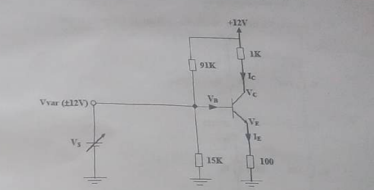
Figure 301.1. NPN voltage-divider bias arrangement used as the reference circuit. The emitter resistor provides DC feedback.
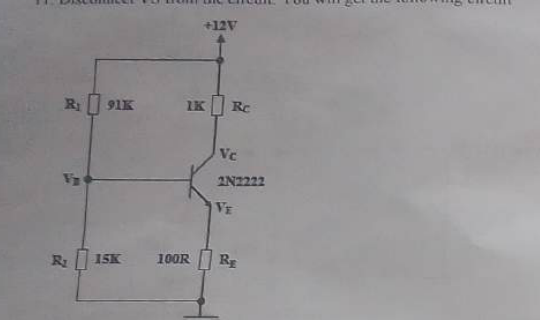
Figure 301.2. Bias circuit after the variable source is disconnected for the operating-point check.
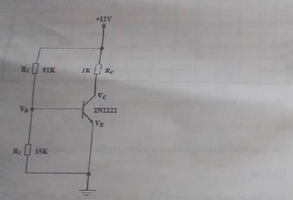
Figure 301.3. Circuit condition with RE temporarily shorted. The comparison shows why emitter feedback improves DC stability.
5 · Table of values
Data / table of values
ⓘ
No table is inserted, as requested. The supplied material contains a blank observation schedule but no completed readings. Record the actual VB, VE, VC, VBE, VCE, IE and IC values from the laboratory session rather than copying assumed values into a submission.
6 · Procedure
Procedure
With the trainer switched off, connect the TPS-3371 to the prescribed DC supply and identify the common ground.
Place the 2N2222 on the breadboard in the correct orientation. Confirm the emitter, base and collector pin arrangement from the device data sheet rather than assuming every transistor has the same pin order.
Assemble the voltage-divider bias circuit shown in Figure 301.1, including the collector resistor and emitter resistor. Have the circuit checked before energising it.
Switch on the trainer and apply the base/source settings given in the manual, one setting at a time. Allow the reading to settle before recording it.
Measure VB, VE and VC. If the report sheet requires derived quantities, obtain VBE from VB − VE and VCE from VC − VE. The emitter current may be estimated from VE/RE and the collector current from the voltage drop across RC, provided the resistor values are the actual fitted values.
Use the readings to identify whether each condition is in cutoff, active operation or saturation. Do not classify a point from one voltage alone; consider the complete set of terminal readings.
Disconnect the variable source as instructed in the manual. Measure VB, VE and VC again and mark the resulting operating condition in the report notes.
Short the emitter resistor with the approved banana wire only after the supervisor has checked the connection. Take the required DC readings and compare the new condition with the unshorted circuit.
Switch the supply off, remove the temporary short and return the trainer to its safe state. Preserve the actual readings separately for the final laboratory sheet.
7 · Precautions
Precautions
Switch off the supply before inserting or moving the transistor and jumper wires.
Verify the 2N2222 pinout; reversing collector and emitter can produce misleading readings or damage the device.
Keep the base current within the trainer's stated limit. A transistor can heat rapidly when forced into saturation.
Use the correct meter function and polarity. A current meter placed across the supply is effectively a short circuit.
Never leave the emitter resistor shorted beyond the observation required; the resistor is part of the circuit's thermal protection.
Check the common ground between the power supply, meter and oscilloscope before interpreting a zero reading.
8 · Discussion
Discussion
The central observation is that the base terminal does not directly supply the collector power. Instead, it controls the conduction state of the device. As the base–emitter voltage increases, the base current rises and the collector current follows while the transistor remains active. Because RC is in the collector path, a rise in collector current produces a larger voltage drop across RC; the collector voltage therefore falls. This inverse movement between current and collector voltage is the basis of common-emitter voltage amplification.
At very small base drive, the transistor is in cutoff and the collector voltage is close to the supply value. When enough base drive is applied, the device enters the active region and the collector current is controlled mainly by base current and device gain. Further drive eventually pushes the transistor into saturation. The output then stops responding linearly because the supply and collector resistor, rather than β, determine the available current. This is why a switch is designed to move deliberately between cutoff and saturation, while an amplifier is biased away from both extremes.
The emitter resistor makes the bias less sensitive to transistor-to-transistor variation and temperature. If current tends to rise, the emitter voltage rises, reducing VBE and opposing the rise. When the resistor is shorted, this corrective action is removed. The transistor may then show a different collector current or Q-point, and the circuit becomes more sensitive to β, temperature and accidental changes in contact resistance. This is an important practical lesson: a component that appears to reduce gain can be deliberately included to improve reliability.
Because no completed measurements were supplied, it would be inappropriate to claim a numerical Q-point or a measured percentage error. The valid conclusion is qualitative: the expected sequence is cutoff → active → saturation as the drive increases, with the emitter-resistor circuit showing the more stable DC behaviour.
9 · Conclusion
Conclusion
The experiment establishes the BJT as a controllable current device with three practically important operating regions. It explains how the input and output characteristics are formed, how the collector load creates a DC load line, and why the Q-point must be selected inside the active region for undistorted amplification. It also demonstrates the engineering value of emitter feedback: the unbypassed circuit is less vulnerable to changes in β and temperature than the circuit with the emitter resistor shorted.
10 · Questions asked in the material
Questions from the manual and answers
Q1.Write the name of each experiment and draw the circuit diagram for each circuit, including measurements, results and graphs.
The experiment name is Bipolar Transistor Characteristics. The necessary circuit references are shown above. Measurements and graphs are deliberately not fabricated in this website; they must be completed from the student's own laboratory readings.
Q2.Compare the preliminary questions and examples with the measurement tools.
The preliminary theory predicts a diode-like VBE response, a collector current controlled by base current in the active region, and the movement from cutoff to saturation as drive increases. The multimeter verifies the DC terminal values, while the oscilloscope can confirm a stable waveform. The comparison should be made against the recorded values, not against a guessed result.
11 · What you have learned
Learning outcome
This experiment connects a transistor symbol to the physical behaviour behind it. In practical terms, it becomes clear why a small base adjustment can control a larger collector current, why the collector voltage falls as current rises, and why a bias network must be designed around stability rather than around a single nominal transistor gain. The difference between using a transistor as an amplifier and using it as a switch is now an operating-point decision, not merely a definition to memorise.
12 · Special questions
Further questions for discussion
Q1.Why is the Q-point usually placed away from cutoff and saturation?
It gives the AC signal room to move in both directions. A point too near either limit clips one half of the signal and creates distortion.
Q2.Why can two 2N2222 devices give slightly different readings?
β, leakage current, junction temperature and manufacturing tolerances differ between devices. A bias circuit with emitter feedback reduces the effect of these variations.
Q3.What would happen if RC were made much larger?
The same collector current would cause a larger voltage drop and the circuit would have greater voltage sensitivity, but the available current swing and safe operating range would be reduced.
13 · Graph
Graph / plot
Not included by request. The manual asks for characteristic curves and a marked Q-point, but no measured data were supplied. Plotting an invented curve would make the report look complete while making it scientifically unreliable.
Experiment 302
The Bipolar Transistor Amplifier
Using a correctly biased BJT to increase the voltage or current of a weak AC signal, then comparing common-emitter and emitter-follower behaviour.
Common emitterEmitter followerAC gainFrequency response
1 · Aims
Aims
The aim is to study the BJT as a small-signal linear amplifier and to observe how a weak input becomes a larger output while the transistor remains in its active region. The exercise compares the voltage-gain behaviour of a common-emitter stage with the buffering behaviour of an emitter follower.
2 · Objectives
Objectives
Establish a stable DC operating point before applying an AC signal.
Explain how a small variation in base current produces a larger collector-current variation.
Measure input and output signal amplitudes and relate them to voltage gain.
Recognise the 180° phase reversal of the common-emitter amplifier.
Explain why an emitter follower has approximately unity voltage gain but is useful as a buffer.
Relate coupling capacitors, emitter bypassing and transistor capacitances to frequency response.
3 · Apparatus
Apparatus and functions
TPS-3371 trainer and breadboardSupports the DC bias and AC amplifier connections.
Regulated power supplyProvides the amplifier's DC collector supply and bias reference.
2N2222 NPN transistor or equivalentOperates in the active region as the amplifying element.
ResistorsSet the voltage-divider bias, collector load and emitter feedback.
Coupling capacitorsPass the AC signal while isolating the DC bias of adjacent stages.
10 µF emitter bypass capacitorProvides a low-impedance AC path around RE when the common-emitter stage is tested.
Function generatorSupplies a small, controlled sine-wave input, for example at 1 kHz as specified in the manual.
Oscilloscope and multimeterDisplay the phase and waveform and measure DC bias and AC amplitudes.
4 · Theory / diagram
Theory of a BJT amplifier
A transistor amplifier does not amplify a signal by magic. It uses a DC supply to provide power and a carefully selected bias point to make the transistor respond approximately linearly to a small AC variation. The input signal is superimposed on the DC base bias. During the positive half-cycle, the base current increases, collector current increases and the voltage drop across the collector resistor becomes larger. Since the output is taken at the collector, the collector voltage falls. During the negative half-cycle the reverse sequence occurs. This explains the inversion of the common-emitter output.
For small signals, the relevant quantities are changes rather than absolute values:
Av = vo / vi Ai = io / ii Ap = AvAi
These ratios must be formed using the same convention throughout the report, such as peak-to-peak voltage for both input and output. Mixing peak-to-peak input with RMS output produces a meaningless gain. Similarly, an oscilloscope probe must be connected at the same reference ground for both channels.
Common-emitter configuration
The common-emitter (CE) stage applies the input at the base and takes the output at the collector. It normally provides useful voltage gain and current gain, with a medium input resistance and a medium-to-high output resistance. The output is approximately 180° out of phase with the input because an increase in collector current increases the drop across RC and lowers the collector voltage. The stage is a good general-purpose voltage amplifier, but its gain and linearity depend strongly on the bias point and the collector/emitter resistors.
Emitter follower / common collector
In an emitter follower, the input remains at the base but the output is taken from the emitter. The emitter voltage follows the base voltage, offset by the base–emitter junction voltage in the DC sense. Its voltage gain is close to unity, but it has high input resistance and low output resistance. That makes it valuable when a source with limited current must drive a load: the follower buffers the source without requiring a large voltage gain. It does not produce the 180° inversion of the common-emitter stage.
Biasing and frequency response
Voltage-divider bias and an emitter resistor are used to make the operating point less dependent on β and temperature. Coupling capacitors block DC between the signal source and the amplifier. At low frequency their reactance is large, so signal transfer and gain fall. In the mid-band, the capacitors behave more nearly as short circuits and the gain is relatively flat. At high frequency, internal transistor capacitances and stray wiring capacitances shunt signal current away from the intended path, so the gain falls again.
Important distinction: the 10 µF bypass capacitor is connected in parallel with RE for AC behaviour only. It must not be treated as a short circuit in the DC bias calculation, because doing so would remove the emitter's DC feedback and change the Q-point.
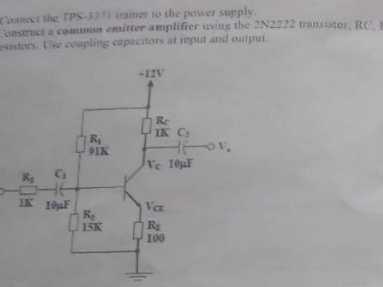
Figure 302.1. DC bias arrangement. The operating point is established before the AC source is connected.Figure 302.2. Common-emitter AC amplifier showing the input and output coupling capacitors and collector output.
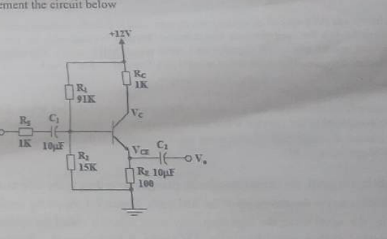
Figure 302.3. Emitter-follower connection used for the comparison stage.
5 · Table of values
Data / table of values
ⓘ
No table is inserted, as requested. The report does not invent VB, VE, VC, input amplitude, output amplitude, gain, input resistance or output resistance. These are the values to be copied from the actual oscilloscope and meter observations if a completed results sheet is required.
6 · Procedure
Procedure
Switch off the trainer and assemble the DC bias circuit. Check the transistor orientation and all capacitor polarities before applying power.
Switch on the DC supply with the function generator disconnected. Measure the base, emitter and collector DC voltages and confirm that the transistor is biased in the active region.
Connect the oscilloscope channel to the function-generator output first so that the input amplitude is known. Use the small sine-wave signal specified by the manual, such as 10 mV at 1 kHz, only after the supervisor approves the level.
Connect the generator to the amplifier input through the coupling capacitor. Connect the second oscilloscope channel to the collector, with both probes referenced correctly.
Observe the output waveform. Increase the input only enough to obtain a clear, undistorted output; excessive input drives the transistor towards cutoff or saturation.
Measure input and output amplitudes using a consistent scope measurement mode. Determine the voltage gain from the ratio of output to input, retaining the sign or separately recording the 180° phase reversal.
With the DC bias unchanged, connect the 10 µF bypass capacitor in parallel with RE as directed. Observe how the AC gain changes while the DC operating point should remain approximately the same.
Implement the emitter-follower circuit. Repeat the waveform and gain observations, then compare the voltage gain, phase relationship and loading behaviour with the common-emitter stage.
Vary the input frequency within the safe range and describe the low-, mid- and high-frequency response. Switch off the equipment and remove the connections after the supervisor has checked the circuit.
7 · Precaution
Precautions
Begin with the function generator amplitude at its minimum and increase it gradually.
Do not connect or remove the bypass capacitor while the circuit is energised unless the trainer procedure explicitly permits it.
Use a ×10 oscilloscope probe where appropriate to reduce loading and protect the instrument input.
Keep the transistor in its active region; a visibly clipped waveform is a warning, not a successful amplification result.
Observe electrolytic capacitor polarity. A reversed capacitor may heat or fail.
Do not use the DC meter setting to measure the AC output amplitude or use an ohmmeter on a powered circuit.
8 · Discussion
Discussion
Biasing is the foundation of this experiment. Without a suitable DC operating point, a small sine wave cannot be reproduced faithfully: one half-cycle will reach cutoff or the other will reach saturation first. The output may still look larger than the input, but it is not useful linear amplification if its shape is clipped. This is why the DC voltages are checked before the function generator is attached.
The common-emitter circuit demonstrates voltage gain and phase reversal together. A positive change at the base causes a positive change in collector current, which increases the collector-resistor drop and makes the collector voltage more negative relative to the supply. The output therefore moves in the opposite direction. The emitter follower behaves differently because the emitter follows the input; its voltage gain is near unity, but the low output resistance enables it to drive a load more effectively.
The bypass capacitor illustrates the difference between DC and AC design. At DC, the capacitor is open after it charges, so the emitter resistor continues to stabilise the bias. At the signal frequency, the capacitor offers a low-impedance path around the resistor and reduces AC negative feedback, normally increasing the CE voltage gain. That gain improvement is accompanied by a trade-off in linearity, stability and low-frequency behaviour.
A meaningful discussion of measured gain must state the frequency, input amplitude, output amplitude, probe setting and whether the value is RMS or peak-to-peak. Because those laboratory readings are not present in the supplied material, this report explains the expected behaviour without pretending that a numerical gain was measured.
9 · Conclusion
Conclusion
The BJT can provide useful small-signal amplification only when it is biased in the active region. The common-emitter arrangement offers voltage gain with an inverted output, while the emitter follower offers approximately unity voltage gain with high input and low output resistance. Coupling and bypass capacitors shape the AC response without being interchangeable with the DC bias components. These ideas are directly relevant to sensor interfaces, signal conditioning and control electronics used around production equipment.
10 · Questions asked in the material
Questions from the manual and answers
Q1.What are the main differences between an NPN and a PNP transistor circuit?
The polarities and conventional current directions are reversed. An NPN is normally biased with its collector more positive than its emitter and turns on when the base is positive relative to the emitter. A PNP is biased with its emitter more positive than its collector and turns on when the base is negative relative to the emitter. The circuit topology can be complementary, but supply polarity and transistor orientation must be changed correctly.
Q2.List five applications of a bipolar transistor amplifier.
Examples include microphone pre-amplifiers, sensor signal conditioning, audio voltage stages, radio-frequency driver stages and level/interface circuits between control systems. The emitter follower is especially useful as a buffer.
Q3.What is observed when the frequency is varied?
Gain is normally lower at very low frequency because coupling and bypass capacitors have greater reactance. It is relatively constant through the mid-band and decreases at high frequency because of transistor and stray capacitances. The exact corner frequencies depend on the component values and the circuit layout.
Q4.What is the conclusion?
A correctly biased BJT amplifies a small AC signal, but its gain, phase and frequency response depend on the configuration and supporting components. A CE stage is a voltage amplifier; an emitter follower is primarily a buffer.
11 · What you have learned
Learning outcome
The practical lesson is that a good amplifier is designed as a complete system. The transistor, bias resistors, coupling capacitors, source, load and measurement probes all influence the observed result. The exercise also makes the word “gain” more precise: gain is a ratio measured under defined conditions, not simply the impression that one waveform looks taller than another.
12 · Special questions
Further questions for discussion
Q1.Why does bypassing RE increase gain?
It reduces the AC negative feedback caused by the emitter resistor, increasing the small-signal change in collector current for a given input. It does not remove the resistor's DC stabilising role because a capacitor is open to steady DC.
Q2.Why can increasing gain make an amplifier less useful?
Higher gain can reduce the available linear signal swing, increase distortion and make the stage more sensitive to noise and component tolerances. A stable, predictable gain is usually more useful than the largest possible gain.
13 · Graph
Graph / plot
Not included by request. The manual requests scope traces and frequency-response plotting, but no readings or traces were supplied. Only the necessary amplifier diagrams are shown.
Experiment 303
Amplitude Modulation (AM)
Generating and observing an AM signal, relating the envelope to the message, and distinguishing under-modulation, 100% modulation and over-modulation.
CarrierEnvelopeModulation indexSidebands
1 · Aims
Aims
The aim is to generate and observe amplitude-modulated waves and to understand how the amplitude of a high-frequency carrier is varied by a lower-frequency information signal. The experiment also introduces modulation depth, over-modulation, the AM spectrum and the practical reason modulation is used in communication systems.
2 · Objectives
Objectives
Explain why an audio or information signal is placed on a higher-frequency carrier.
Generate an AM waveform with the TPS-3421 trainer and observe its envelope on an oscilloscope.
Relate the carrier amplitude, message amplitude and modulation coefficient.
Distinguish under-modulation, 100% modulation and over-modulation from the envelope shape.
Identify the carrier and the upper and lower sidebands in the frequency domain.
Explain how message waveform and frequency affect the AM waveform and its bandwidth.
3 · Apparatus
Apparatus and functions
TPS-3421 communication trainerProvides the carrier oscillator, modulator and signal access points.
DC power supplyEnergises the trainer at the prescribed operating voltage.
OscilloscopeDisplays the carrier cycles and the slower AM envelope.
Audio / function generatorProduces the sinusoidal or triangular message signal at the selected frequency.
Banana leadsConnect the trainer modules without creating loose, unreferenced connections.
4 · Theory / diagram
Theory of amplitude modulation
Most useful information signals, such as speech and music, occupy relatively low frequencies. A low-frequency signal is difficult to radiate efficiently from a practical antenna and cannot be separated easily from all other users if it is sent directly. In AM, the information signal is used to vary the amplitude of a much higher-frequency carrier. The carrier provides a transport location in the radio spectrum; the changing envelope carries the information.
For a sinusoidal message and carrier, let the message be vm(t) = Vm cos(2πfmt) and the carrier be vc(t) = Vc cos(2πfct). Conventional AM is expressed as:
vAM(t) = Vc[1 + m cos(2πfmt)] cos(2πfct)
Here m is the modulation coefficient or modulation index. For a single sinusoidal message it can be found from the envelope extremes as:
m = Vm/Vc = (Vmax − Vmin) / (Vmax + Vmin)
When 0 < m < 1, the envelope never crosses zero and an envelope detector can recover the message. At m = 1 the carrier is modulated to 100%; the envelope reaches zero at its minimum. If m > 1, the envelope crosses over itself. This over-modulation creates distortion because a simple detector cannot know which part of the crossed envelope represents the original message.
Frequency components and bandwidth
Using the product identity for two cosines, the AM equation contains three components: the carrier at fc, an upper sideband at fc + fm, and a lower sideband at fc − fm. The sidebands contain the information; the unmodulated carrier carries no message but provides the reference for a simple receiver. For a single message frequency, the bandwidth is the separation from the lower to upper sideband, 2fm. A real audio signal contains a range of frequencies, so the highest message frequency determines the occupied AM bandwidth.
For a sinusoidal message, the total transmitted power can be written as PT = PC(1 + m²/2), and the power in the two sidebands increases with m². This explains why deeper modulation improves the relative information power up to the permitted limit, while over-modulation sacrifices the envelope and creates distortion.
How to read the display: the rapid oscillations are the carrier. The smooth outline joining their peaks is the envelope and should have the same shape as the message, scaled and shifted vertically.
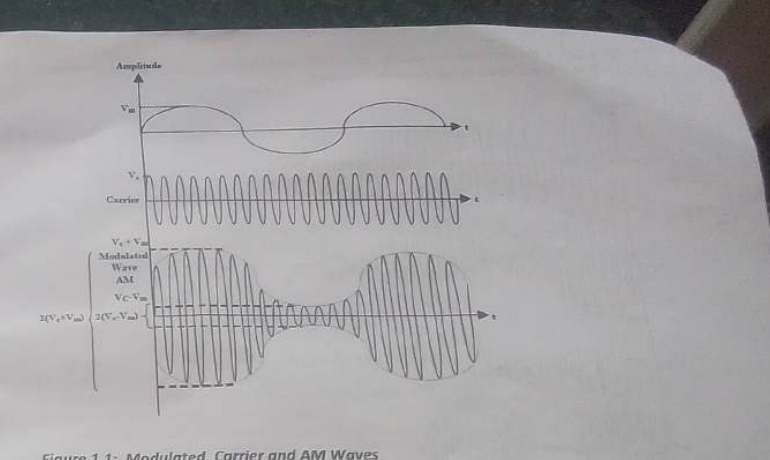
Figure 303.1. Conceptual AM path: the low-frequency message controls the amplitude of the high-frequency carrier.
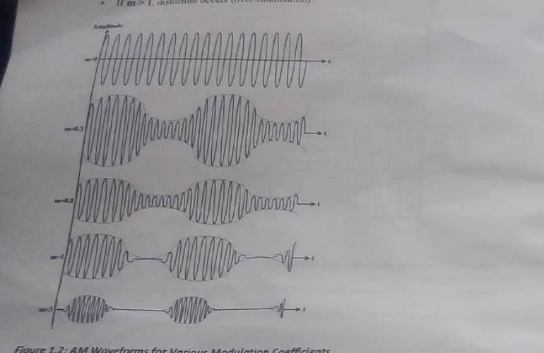
Figure 303.2. Under-modulated, fully modulated and over-modulated waveform shapes.
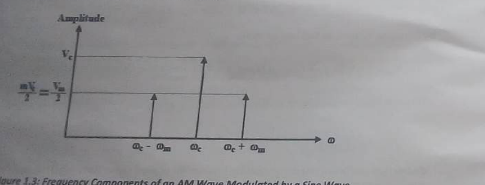
Figure 303.3. Frequency-domain components of a single-tone AM signal.
5 · Table of values
Data / table of values
ⓘ
No table is inserted, as requested. No measured carrier amplitude, message amplitude, envelope extrema, modulation coefficient or frequency readings were supplied. Do not replace them with textbook examples when presenting the practical as completed work.
6 · Procedure
Procedure
Connect the TPS-3421 trainer to its approved power supply and keep the output controls at their minimum settings.
Connect the oscilloscope to the modulator output. Select the high carrier range specified by the manual and first observe the unmodulated carrier.
Apply the variable DC input used by the trainer. Change it through the prescribed settings and observe how the carrier amplitude responds. Record only the actual readings if a data sheet is being completed.
Disconnect the DC source with the trainer in a safe state and connect the audio generator to the AM input. Begin with a sine wave at the prescribed frequency.
Adjust the message amplitude to obtain the requested modulation level, then observe the envelope and compare its shape with the input message.
Change the message waveform to triangular and then return it to sinusoidal. Note that the envelope follows the message shape, while the carrier frequency remains essentially unchanged.
Adjust the message level to the manual's sequence of modulation coefficients, including the approach to 100% and the over-modulated condition. Observe the onset of envelope crossing and distortion.
Measure the carrier and envelope quantities only with a consistent oscilloscope scale. If required, derive the modulation coefficient from the envelope extremes.
Change the message frequency as specified and switch to the low carrier range. Observe how the number of carrier cycles under one message period and the occupied sideband spacing change.
Switch off the generator and trainer before removing leads. Keep the waveform descriptions separate from any future numerical calculation.
7 · Precaution
Precautions
Use the correct trainer input; connecting the audio generator to a DC source or carrier output can produce an invalid result.
Start with the generator amplitude low. Over-modulation should be introduced deliberately, not accidentally.
Keep the oscilloscope time base fast enough to resolve the carrier and the voltage scale within the input limit.
Do not judge modulation depth from the height of one carrier cycle. Use the maximum and minimum envelope values.
Use the trainer ground as the common reference and do not short separate signal outputs together.
8 · Discussion
Discussion
AM is an intuitive modulation method because the information can be seen in the outline of the waveform. With a small message amplitude, the envelope varies gently around the carrier and the signal is under-modulated. As the message amplitude approaches the carrier amplitude, the envelope reaches zero at its trough. This is the practical limit for distortion-free envelope detection. Beyond that point, the envelope crosses, and the recovered message is no longer a faithful copy.
Changing the message from sine to triangle shows that AM changes the carrier amplitude rather than forcing the carrier to become a triangle. The rapid oscillation remains the carrier; the slower outline changes to match the message. Changing message frequency changes the spacing of sidebands and the number of visible carrier cycles within one message period, but does not by itself change the fundamental AM principle.
AM also exposes an efficiency trade-off. A large part of the transmitted power can remain in the carrier, even though the sidebands carry the information. Suppressed-carrier and single-sideband systems use power and bandwidth more efficiently, but they require more complex generation and reception. The simple AM trainer is therefore valuable because it makes the compromise visible before more advanced systems are introduced.
9 · Conclusion
Conclusion
The experiment demonstrates that amplitude modulation carries a lower-frequency message in the envelope of a higher-frequency carrier. A modulation index below unity gives an undistorted envelope, unity is the limiting condition, and an index greater than unity causes over-modulation and distortion. The spectrum consists of the carrier plus upper and lower sidebands, with bandwidth determined by the highest message frequency.
10 · Questions asked in the material
Questions from the manual and answers
Q1.Write the expressions for the carrier, modulating and modulated waves.
A suitable sinusoidal carrier is vc(t) = Vccos(2πfct), the message is vm(t) = Vmcos(2πfmt), and conventional AM is vAM(t) = Vc[1 + m cos(2πfmt)]cos(2πfct).
Q2.What is the bandwidth of an AM signal?
For a single-tone message it is 2fm. For a message band extending to fmax, the required bandwidth is 2fmax.
Q3.Draw or describe the modulated signals obtained.
The carrier is a constant-amplitude high-frequency sine wave. The AM waveform has the same rapid carrier oscillation, but its upper and lower peaks follow the slower message. Under-modulation leaves a clear non-crossing envelope; over-modulation produces envelope crossing.
11 · What you have learned
Learning outcome
The experiment makes modulation a physical process rather than a formula alone. It becomes possible to identify the carrier, message and envelope on the oscilloscope, to recognise why modulation depth must be controlled, and to understand why the sidebands rather than the carrier are associated with information.
12 · Special questions
Further questions for discussion
Q1.Why is a carrier needed when the message already contains the information?
The carrier moves the information to a frequency range where practical antennas, channel allocation and filtering are possible. It also allows several users to occupy different carrier frequencies.
Q2.Why does over-modulation distort an envelope-detector output?
The detector follows the largest high-frequency peaks. When the envelope crosses zero, the peak sequence no longer has the same polarity as the message, so the detector cannot reconstruct the original waveform without distortion.
13 · Graph
Graph / plot
Not included by request. The manual asks for efficiency and waveform plots, but there are no experimental values in the supplied material. The figures above are explanatory diagrams, not fabricated experimental graphs.
Experiment 304
Frequency Modulation (FM)
Observing how a message changes the instantaneous frequency of a carrier, then relating voltage sensitivity, frequency deviation, modulation index and bandwidth.
VCOFrequency deviationCarson's ruleNoise immunity
1 · Aims
Aims
The aim is to understand and observe frequency modulation using the trainer's FM modulator inputs, and to investigate how the amplitude and frequency of the message affect carrier deviation, modulation index and occupied bandwidth.
2 · Objectives
Objectives
Generate and identify an FM waveform.
Measure how the input voltage changes the carrier frequency in the VCO region.
Determine frequency deviation and the FM modulation index.
Estimate the bandwidth using Carson's rule.
Compare FM's constant-amplitude behaviour with AM's amplitude-varying behaviour.
Explain the advantages and bandwidth cost of FM in communication systems.
3 · Apparatus
Apparatus and functions
TPS-3421 trainerContains the FM modulator / VCO, selectable carrier ranges and signal access points.
DC power supplySupplies the trainer's regulated operating power.
OscilloscopeShows constant-amplitude FM cycles and helps compare instantaneous cycle spacing.
Audio / function generatorProvides a controlled sinusoidal message with adjustable amplitude and frequency.
Frequency counterMeasures carrier frequency and the maximum and minimum instantaneous frequency more reliably than counting a crowded scope display.
Banana leadsMake the FM1/FM2 and instrument connections.
4 · Theory / diagram
Theory of frequency modulation
In FM, the amplitude of the carrier remains substantially constant while its instantaneous frequency varies according to the message voltage. A positive message voltage can make the carrier cycles closer together, while a negative voltage makes them farther apart. The information is therefore carried in timing or phase change rather than in the height of the waveform.
vFM(t) = Vc cos[2πfct + β sin(2πfmt)]
For a sinusoidal message, Δf is the maximum frequency deviation and β is the modulation index:
β = Δf / fm and, in the VCO's linear region, Δf = KfVm
Kf is the frequency sensitivity of the modulator, commonly expressed in hertz per volt. Increasing the message amplitude increases Δf. Increasing the message frequency with the same message amplitude leaves the deviation approximately unchanged in an ideal voltage-sensitive modulator but reduces β because the denominator fm becomes larger.
Bandwidth and sidebands
Unlike an AM signal, an FM signal can contain many significant sidebands. A practical estimate is Carson's rule:
BFM ≈ 2(Δf + fm) = 2fm(β + 1)
This wider bandwidth is exchanged for better noise performance. Many common noise sources appear mainly as amplitude changes; an FM receiver can limit amplitude before demodulation and reject a portion of that noise. FM is not immune to every interference mechanism, however, and the improvement requires appropriate bandwidth and signal strength.
Reading an FM waveform
At the centre of the message, the carrier returns to its unmodulated frequency. Where the message is positive and large, the cycles are densest; where it is negative and large, the cycles are most widely spaced. The vertical height should remain nearly unchanged. This is the key visual distinction from AM.
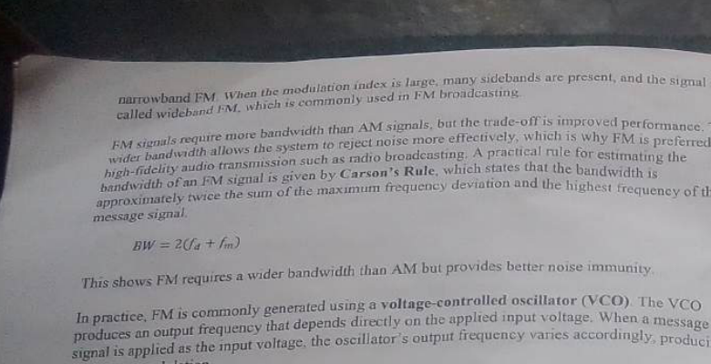
Figure 304.1. Illustration of constant-amplitude FM: the instantaneous frequency changes while the envelope remains essentially constant.
5 · Table of values
Data / table of values
ⓘ
No table is inserted, as requested. The supplied material gives the quantities to observe—input voltage, carrier frequency, deviation, modulation index and bandwidth—but supplies no completed values. Actual counter readings are required for a numerical report.
6 · Procedure
Procedure
Connect the TPS-3421 to its approved supply and switch it on with the variable source at zero or the prescribed initial setting.
Connect the variable voltage source to the FM1 input. Observe the carrier frequency with the counter while changing the input in the safe range.
Record the actual frequency at each approved input setting. Determine the change in frequency relative to the unmodulated carrier and use the linear portion to discuss Kf.
Repeat the input-voltage observation using FM2. Do not connect both sources in a way that ties two active outputs together.
Connect a 1 kHz sine generator, with the required DC offset, to FM2. Increase the message amplitude gradually and observe the changing cycle spacing on the oscilloscope.
For each prescribed peak-to-peak input amplitude, measure the maximum deviation with the frequency counter and determine β = Δf/fm if calculations are being completed.
Estimate the occupied bandwidth with Carson's rule and then repeat the observation using the low carrier range specified in the manual.
Return the input amplitude to minimum, switch off the instruments and remove leads only after the trainer is safe.
7 · Precaution
Precautions
Keep the VCO input within its linear and rated voltage range; a damaged or saturated VCO will not produce a meaningful Kf.
Use a frequency counter for frequency deviation where possible. Do not infer a numerical deviation from a crowded waveform without a time-base reference.
Maintain the message frequency while comparing amplitude changes so that the change in β has a clear cause.
Do not confuse FM's constant envelope with a guarantee that every connected instrument can tolerate every voltage.
Use a common ground and avoid connecting the function generator output to the trainer's DC source.
8 · Discussion
Discussion
FM shifts the burden of information from amplitude to time. A larger message amplitude produces a larger departure from the centre frequency, while the carrier amplitude stays nearly constant. As the input amplitude is raised, the scope display therefore shows more compression and expansion of the carrier cycles rather than a taller envelope. This observation separates genuine FM from AM even when both are produced by the same communication trainer.
The modulation index is a useful way to compare experiments performed at different message frequencies. Two tests may have the same deviation but different β values if their message frequencies differ. A larger β generally means more significant sidebands and therefore a greater bandwidth according to Carson's rule. The engineer must balance fidelity and noise performance against the limited channel bandwidth available.
The FM1 and FM2 inputs provide an opportunity to examine practical modulator sensitivity. An ideal relationship between input voltage and frequency would be linear, but real VCOs have limits, offsets and non-linear regions. Readings near the ends of the control range should therefore be treated cautiously; the central linear region is the appropriate basis for estimating Kf.
9 · Conclusion
Conclusion
The experiment verifies that FM is produced by changing the instantaneous frequency of a constant-amplitude carrier. Frequency deviation increases with message amplitude, the modulation index is the ratio of deviation to message frequency, and Carson's rule gives a practical bandwidth estimate. FM offers improved rejection of many amplitude-noise effects, but it uses more spectrum than a single-tone AM signal.
10 · Questions asked in the material
Questions from the manual and answers
Q1.How does the VCO constant Kf vary with input voltage?
In the intended operating region, Kf is the slope Δf/ΔV and should be approximately constant. Outside that linear region, the slope may change because the VCO approaches its control or frequency limits.
Q2.What happens to frequency deviation when input amplitude increases?
For a fixed message frequency and a linear VCO, deviation increases approximately in proportion to message amplitude.
Q3.Why does FM require more bandwidth than AM?
Frequency variation generates a series of sidebands around the carrier. The number of significant sidebands grows with modulation index, so the practical occupied bandwidth is wider; Carson's rule estimates it as 2(Δf + fm).
Q4.State advantages of FM over AM.
FM has a constant envelope, permits amplitude limiting to remove some noise, and can provide better audio quality for an allocated channel. Its disadvantages include wider bandwidth, greater circuit complexity and the need for adequate received signal strength.
11 · What you have learned
Learning outcome
FM is best understood by watching the spacing of cycles. The exercise links a control voltage to frequency sensitivity, then links deviation to modulation index and bandwidth. It also shows that “better noise performance” is an engineering trade: it is purchased with spectrum and circuit complexity.
12 · Special questions
Further questions for discussion
Q1.Why can a limiter be used before an FM discriminator?
Ideally, the information is in instantaneous frequency rather than amplitude. A limiter removes much of the amplitude variation caused by noise while preserving zero-crossing timing.
Q2.What is the difference between deviation and modulation index?
Deviation is an absolute frequency shift in hertz. Modulation index is dimensionless and compares that shift with the message frequency. They describe related but different aspects of the signal.
13 · Graph
Graph / plot
Not included by request. The manual proposes frequency-versus-voltage and bandwidth records, but no measured values were supplied. The waveform figure is a necessary explanatory diagram, not a result plot.
Experiment 305
Power Factor Correction
Demonstrating how a shunt capacitor compensates the reactive current of an inductive AC load and reduces the current drawn from the supply for the same useful power.
AC circuitsReactive powerPhasorsCapacitor compensation
1 · Aims
Aims
The aim is to demonstrate and verify the principle of power-factor correction in an AC circuit by compensating the reactive current of an inductive load with a capacitor connected in parallel with that load.
2 · Objectives
Objectives
Explain the relationship between real power, apparent power, reactive power and power factor.
Observe the current drawn by resistive, inductive and combined loads.
Show how a shunt capacitor supplies a leading reactive current locally.
Compare supply current before and after correction while the load power remains substantially the same.
Interpret the voltage-current phase angle using a phasor diagram.
Understand why correction is used in industrial installations and production plants.
3 · Apparatus
Apparatus and functions
Auto-transformer / VariacProvides a controlled AC voltage under supervision.
Two AC ammeters, 0–5 AAllow the load current and supply current to be compared.
WattmeterMeasures real power consumed by the load; its multiplier setting must be noted.
AC voltmeter, 0–100 VMeasures the applied supply voltage.
Decade resistance boxProvides a selectable resistive component.
Decade capacitance boxProvides adjustable leading reactive compensation.
Lloyd inductance / inductive loadProduces lagging current and reactive power.
Switches, leads and supervisor-approved AC sourceControl the L, R, C and combined test conditions.
4 · Theory / diagram
Theory of power-factor correction
In an AC system, voltage and current do not always rise and fall together. A purely resistive load draws current in phase with the supply voltage and converts electrical power into useful heat or mechanical work. An ideal inductor draws a current that lags the voltage by 90°, while an ideal capacitor draws a current that leads the voltage by 90°. Inductive and capacitive elements exchange energy with the source each cycle rather than consuming it permanently.
Real power is the average rate at which energy is consumed. Apparent power is the product of RMS voltage and RMS current. Their relationship is expressed by the power factor:
P = VI cos φ and PF = cos φ = P / (VI)
For a partly inductive load, the current has an in-phase component that supplies real power and a lagging quadrature component associated with reactive power. The source current is the vector sum of these components. The larger the lagging component, the larger the supply current needed for the same useful power, and the lower the power factor.
How the capacitor corrects the load
A capacitor connected in parallel with the load draws a leading current. If its magnitude is chosen appropriately, this leading current cancels much of the load's lagging current locally. The supply then delivers mainly the in-phase component. The load still receives the same voltage and continues to perform its work, but the current in the supply conductors is reduced. This reduces I²R losses and releases capacity in cables, transformers and generators.
QC = V² / XC, XC = 1/(2πfC) and XL = 2πfL
The correction must be sized carefully. Too little capacitance leaves a lagging power factor; too much can make the system leading and may produce overvoltage, resonance or harmful switching transients. Industrial capacitor banks are therefore switched in steps and protected by suitable equipment.
Load combinations in the exercise
The manual compares the inductive load alone, inductance with resistance, inductance with a shunt capacitor, and the combined resistance-inductance-capacitance condition. A wattmeter reading is not the same as the product VI unless the power factor is unity. This is the reason ammeter, voltmeter and wattmeter readings must be considered together rather than in isolation.
Figure 305.1. Inductive load before correction: the supply current lags the voltage.
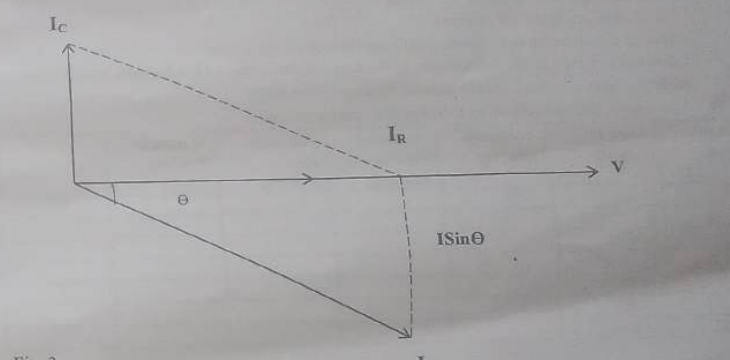
Figure 305.2. A capacitor supplies a leading current that reduces the lagging component seen by the source.
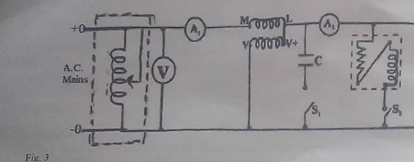
Figure 305.3. Test arrangement for comparing supply current and load current with the switches in their prescribed positions.
5 · Table of values
Data / table of values
ⓘ
No table is inserted, as requested. No voltage, current, wattmeter or switch-condition readings were included in the supplied material. A completed report should use the readings actually taken for L, L+C, L+R and L+R+C, including the wattmeter multiplier.
6 · Procedure
Procedure
With the AC source isolated, assemble the circuit of the manual and ask the supervisor to check it. Put every switch in the OFF position before energising.
Confirm the range and multiplication factor of the wattmeter, the polarity of the meters and the safe voltage limit of every load.
Set the auto-transformer to its minimum output. Switch on the supply and increase the voltage only to the approved test value.
Close the prescribed switch for the inductive load alone. Observe the supply voltage, load current, supply current and real power without changing the circuit unexpectedly.
Repeat for the inductance and resistance combination, then for the inductance with its shunt capacitor, following the switch sequence in the manual.
Allow each reading to settle before writing it down. Note whether the supply current falls after the capacitor is connected while the wattmeter indication remains related to the same useful load power.
Return the auto-transformer to zero, open the switches and isolate the supply before changing the resistance or capacitance setting.
Use the phasor explanation to discuss the readings. Any calculation of power factor or capacitance should be completed from actual values, not from nominal examples.
7 · Precaution
Precautions
This is a mains-frequency experiment. Only make or alter connections when the supply is isolated and the supervisor permits it.
Never short a capacitor box, connect it directly across an unsuitable source or change its range while energised.
Keep the Variac at zero before switching on and before switching off.
Use the correct wattmeter range and include its multiplier in any later calculation.
Do not assume a low wattmeter reading means a small current; a reactive load can draw substantial current while consuming little real power.
Discharge capacitors through the approved path after isolation and do not touch terminals until the supervisor confirms they are safe.
8 · Discussion
Discussion
The important point is that power factor correction does not create additional useful load power. It changes where the reactive current is supplied. Before correction, the source must provide both the in-phase current that transfers real power and the lagging current that supports the magnetic field of the inductive load. After a suitable capacitor is connected at the load terminals, the capacitor supplies much of that lagging requirement locally. The source current can then be smaller even though the load voltage and real power are approximately unchanged.
This distinction explains why a wattmeter and ammeter do not tell the same story. A purely reactive current contributes to VI and therefore to apparent power, but it contributes little or no average real power. The reduction in supply current after compensation is therefore evidence of improved utilisation of the electrical installation, not evidence that the machine has stopped using energy.
In a production environment, low power factor causes higher conductor losses, larger voltage drops and the need for oversized transformers or cables. Correction improves capacity, but it must be controlled. If the capacitor bank over-corrects an installation, the current may lead the voltage and resonance with system inductance may amplify harmonics. The best correction is close to the required operating condition, not simply the largest possible capacitance.
Since the supplied manual contains no completed readings, no claim is made about the numerical improvement obtained in this particular session. The expected qualitative result is a lower supply current and a power factor closer to unity when the capacitor is correctly selected.
9 · Conclusion
Conclusion
The experiment demonstrates that an inductive load can draw a large lagging current without consuming an equal amount of real power. A shunt capacitor supplies a leading current, reduces the reactive component seen by the source and moves the power factor towards unity. Correct compensation reduces supply current and losses, but the capacitance must be selected and switched safely to avoid leading power factor and resonance.
10 · Questions asked in the material
Tasks from the manual and answers
Q1.What happens for a purely resistive load?
Current is in phase with voltage, so PF is unity and real power is VI for RMS quantities.
Q2.What happens for a purely reactive load?
For an ideal inductor or capacitor, current is 90° out of phase with voltage. Average real power is zero, even though current and apparent power are not zero.
Q3.Why is the supply current not the arithmetic sum of separate load currents?
AC currents have phase as well as magnitude. They must be added as phasors, so leading and lagging components can partially cancel.
Q4.What calculations are requested?
The manual asks for power factor for L alone and L+R, scaled vector diagrams, a comparison of supply current with and without correction, and the required capacitance. They are intentionally left for actual laboratory readings rather than invented here.
11 · What you have learned
Learning outcome
The practical makes the phrase “power factor” measurable. It shows why voltage multiplied by current is not automatically real power, why phase angle matters, and how a capacitor can improve the utilisation of an electrical supply without removing the inductive nature of the load itself.
12 · Special questions
Further questions for discussion
Q1.Why are correction capacitors normally connected in parallel rather than in series?
Parallel connection supplies reactive current locally while leaving the load voltage substantially unchanged. A series capacitor would change the load's voltage and impedance and may create a different resonance problem.
Q2.What is the relationship between correction and cable heating?
For a fixed real power, improved PF reduces current. Conductor heating varies approximately with I²R, so even a moderate current reduction can reduce resistive losses noticeably.
13 · Graph
Graph / plot
Not included by request. The manual suggests vector drawings and comparisons, but no experimental values were supplied. The phasor figures are explanatory diagrams, not result graphs.
Experiment 306
The Synchronous Motor
Studying a three-phase synchronous motor under changing excitation and mechanical load, with attention to synchronous speed, power factor and torque angle.
Three phaseDC fieldExcitationTorque angle
1 · Aims
Aims
The aim is to investigate the operating characteristics of a three-phase synchronous motor and to observe how its speed, armature current, power factor and input power respond to excitation and mechanical loading.
2 · Objectives
Objectives
Explain how the stator's rotating magnetic field interacts with the DC-excited rotor field.
Verify that a synchronous motor runs at synchronous speed after it has been brought up to speed.
Observe the effect of varying rotor excitation at no load.
Observe the effect of mechanical load at selected excitation settings.
Relate armature current and power factor to under-excitation, normal excitation and over-excitation.
Understand why a synchronous motor is not self-starting and why a dynamometer is used for the load test.
3 · Apparatus
Apparatus and functions
LKB universal machine setContains the synchronous motor and the coupled machine used for loading.
Three-phase AC supply and auto-transformerProvide a controlled stator voltage under supervision.
DC field supply and rectifierProvide adjustable rotor excitation current.
AC voltmeter, 0–400 VMeasures the three-phase supply voltage as prescribed.
AC ammeters and double-element wattmeterMeasure stator current and the input power of the three-phase motor.
DC ammeter and field rheostatMonitor and adjust the rotor field current.
Dynamometer / coupled generator and load bankProvide a controllable mechanical load on the motor shaft.
Switches, leads and protectionPermit the excitation and armature circuits to be isolated in the correct sequence.
4 · Theory / diagram
Theory of synchronous-motor operation
A three-phase stator winding supplied by balanced AC produces a magnetic field that rotates at synchronous speed. If the supply frequency is f and the machine has P poles:
Ns = 120f / P revolutions per minute
The rotor carries a DC field winding, so its magnetic poles are stationary relative to the rotor. Once the rotor has been brought close to synchronous speed, the rotor poles lock magnetically with the rotating stator field and continue to rotate at Ns. Unlike an induction motor, the steady-state rotor has no slip relative to the rotating field.
Why it is not self-starting
At standstill, the stator field sweeps past the rotor poles too quickly for a steady unidirectional torque to develop. The torque reverses direction over successive half cycles, leaving the average starting torque approximately zero. The machine therefore needs a starting method, such as a damper winding, a separate motor or the trainer's approved procedure to bring it near synchronism before the field is applied.
Load angle and torque
When mechanical load is applied, the rotor falls back in angular position by a load or torque angle δ relative to the stator field. It still rotates at synchronous speed, but a larger electromagnetic torque is required to balance the shaft load. As δ increases, torque increases up to a pull-out limit. Beyond that limit the magnetic locking is lost and the motor can fall out of synchronism.
The rotor excitation changes the internal generated EMF and therefore the phase relationship between supply voltage and armature current. An under-excited motor normally draws lagging current; at a suitable excitation the power factor can approach unity; with further excitation the motor can draw leading current. This controllable reactive-power behaviour is one reason synchronous machines are used for power-factor correction as well as for mechanical drive.
Speed versus load: within the synchronised operating range, adding load changes torque angle and current more than it changes speed. A sudden overload can nevertheless cause pull-out, after which the assumption of synchronous operation is no longer valid.
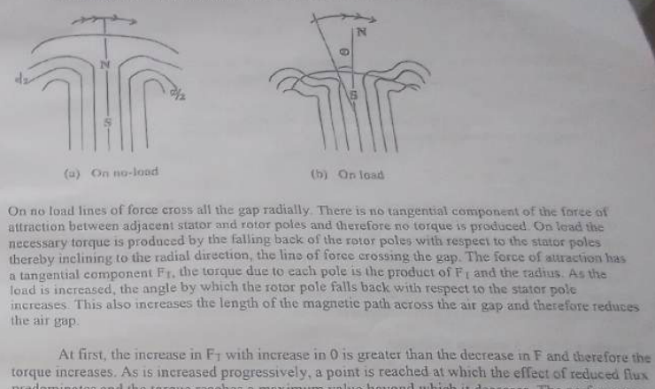
Figure 306.1. Field interaction and the torque angle between stator and rotor poles.
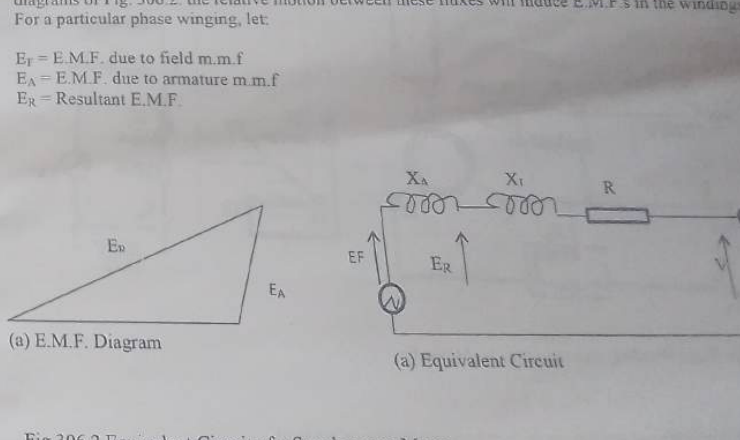
Figure 306.2. Simplified equivalent circuit and phasor view used to discuss excitation.
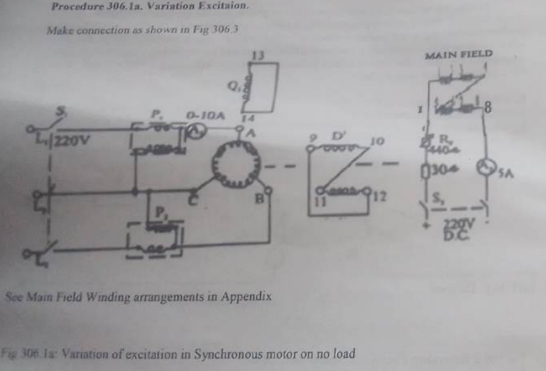
Figure 306.3. No-load excitation arrangement.
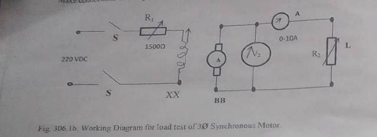
Figure 306.4. Coupled-machine arrangement for applying mechanical load.
5 · Table of values
Data / table of values
ⓘ
No table is inserted, as requested. The manual provides blank schedules for excitation current, armature current, wattmeter readings and power factor, but no completed data were supplied. The actual readings are essential because this experiment is about measured machine behaviour.
6 · Procedure
Procedure
Variation of excitation at no load
Make the connections shown for the no-load excitation test and have the supervisor verify both the armature and field circuits.
Set the field-control rheostat to its maximum resistance and the AC supply control to zero before switching on.
Start the motor using the approved laboratory method. Apply the DC field only in the sequence specified by the supervisor and allow the rotor to reach synchronism.
Adjust the field current through the prescribed range. At each setting, observe the armature current, field current, input power and power-factor indication.
Return the field current to the safe minimum and reduce the AC supply to zero at the end of the no-load test.
Variation of excitation on load
Connect the dynamometer or coupled generator as shown. Confirm that the machine can rotate freely before energising it.
Bring the motor to synchronous speed with the approved starting procedure. Adjust the coupled generator field and load gradually, never by a sudden switch-on.
Apply the prescribed load-current setting and repeat the excitation sequence. Record the actual armature current, field current, input power and power factor for each condition.
Increase the load in steps only within the machine rating. Watch for excessive current, vibration, noise or loss of synchronism.
For the constant-excitation test, set the motor to its selected no-load excitation and keep it fixed while the mechanical load is increased in the prescribed steps.
Unload the machine, reduce the supply to zero, isolate the circuits and allow the set to stop before removing any leads.
7 · Precaution
Precautions
Never energise the motor or field circuit with an unverified connection.
Use the correct starting sequence. Applying DC field at standstill or applying a heavy load before synchronism can trip protection or damage the machine.
Increase voltage, excitation and load gradually and remain below the nameplate ratings.
Keep hands, loose clothing and leads away from the rotating shaft and coupling.
Do not assume that constant speed means constant current; monitor current and power factor continuously.
If the motor falls out of synchronism, remove the load and follow the supervisor's shutdown procedure rather than repeatedly trying to re-engage it.
8 · Discussion
Discussion
The defining feature of the synchronous motor is its speed lock. When synchronism is maintained, the shaft speed is set by supply frequency and pole count rather than by the mechanical load. Increasing load increases the torque angle and electrical power drawn, but the rotor does not gradually slow in the same way as an induction motor. If the required torque exceeds the pull-out capability, the rotor can no longer follow the stator field and synchronism is lost.
The no-load excitation test shows why field current is an important control variable. At low excitation the armature current has a lagging reactive component. As excitation is increased, the current can reach a minimum near unity power factor and then rise again with a leading component. The motor is therefore capable of absorbing or supplying reactive power depending on its field setting, provided its current and thermal limits are respected.
When mechanical load is added, the motor must develop additional electromagnetic torque. The torque angle increases and the armature current changes. The actual path on a practical machine is influenced by winding resistance, leakage reactance, saturation and measurement uncertainty, so a qualitative explanation should be checked against the recorded readings rather than substituted for them. The manual's separate excitation and load tests are useful precisely because they isolate these two effects.
9 · Conclusion
Conclusion
The synchronous motor operates at a speed fixed by supply frequency and pole number once its rotor field is locked to the rotating stator field. Excitation controls the phase of armature current and hence the motor's power factor, while mechanical load is reflected mainly by torque angle and current. The motor's non-self-starting behaviour and pull-out limit make correct starting, gradual loading and continuous supervision essential.
10 · Questions asked in the material
Questions from the manual and answers
Q1.Calculate the torque in each case.
The torque should be obtained from the actual mechanical or electrical output data supplied by the test arrangement, using the unit-consistent relationship between power, angular speed and torque. No readings were supplied here, so no numerical torque is invented.
Q2.Determine the most favourable excitation from the armature-current observation.
For a given mechanical load, the favourable excitation is generally near the setting that gives the required torque with the lowest acceptable armature current and a power factor close to unity, subject to the machine's field and thermal limits.
Q3.What are the conditions for reading synchronous speed?
The motor must be connected to a stable supply of known frequency and pole count, must have attained magnetic synchronism, and must be operating without pull-out or severe transient oscillation. Speed should be measured only after the reading has settled.
Q4.Did the motor fail when load was increased, and why?
This must be answered from the actual observation. If it failed, likely causes include excessive load angle, overload current, insufficient excitation or a disturbance that broke synchronism. The correct response is to unload and isolate the machine safely.
11 · What you have learned
Learning outcome
The exercise shows that a machine can maintain constant speed while its electrical state changes substantially. It also gives a practical meaning to excitation: field current is not only a way of producing torque, but also a means of controlling reactive power and power factor in a three-phase installation.
12 · Special questions
Further questions for discussion
Q1.Why can an over-excited synchronous motor improve plant power factor?
Over-excitation causes the motor to draw leading current. That leading component can offset the lagging current drawn by induction motors and transformers connected to the same bus.
Q2.Why does a sudden load change cause an angle change rather than an immediate speed change?
The rotor field remains locked to the rotating stator field at synchronous speed. The extra torque is developed by a changed angular displacement between the fields; speed changes only if synchronism is disturbed.
13 · Graph
Graph / plot
Not included by request. The manual requests power-factor and load plots, but the necessary machine readings were not provided. The field and connection figures above are the relevant diagrams.
Experiment 307
The Three-Phase Induction Motor
Using no-load and blocked-rotor tests to understand the induction-motor equivalent circuit and its torque, current, power-factor and efficiency behaviour.
Three phaseSlipEquivalent circuitCircle diagram
1 · Aims
Aims
The aim is to determine the approximate performance characteristics of a three-phase induction motor and to understand how torque, slip, speed, current, power factor and efficiency change with load. The practical also introduces the no-load and rotor-locked tests used to obtain an approximate equivalent circuit.
2 · Objectives
Objectives
Explain the production of a rotating magnetic field in a three-phase induction motor.
Define synchronous speed, rotor speed and slip and relate them to rotor frequency.
Obtain the no-load and blocked-rotor information required for an approximate per-phase equivalent circuit.
Understand how the circle diagram represents current, power factor, input power, output power, slip and torque.
Predict how motor performance changes as slip increases from no load towards the rated condition.
Recognise the practical limitations of a model based on approximate tests.
3 · Apparatus
Apparatus and machine rating
LKB universal machine setContains the three-phase induction motor and its accessible terminals.
Three-phase auto-transformerApplies a controlled line voltage, starting from zero.
Two 5 A, 400 V wattmetersUse the two-wattmeter method to measure three-phase input power.
Three AC ammeters and AC voltmeterMeasure line current and supply voltage.
Mechanical rotor-blocking arrangementHolds the rotor stationary during the short-circuit / blocked-rotor test.
DC resistance-measurement equipmentDetermines the stator phase resistance required by the equivalent circuit.
Machine under testManual rating: approximately 2 kW, three phase, 50 Hz, 2 poles, 380 V line-to-line; stator star and rotor delta connections as marked on the machine.
4 · Theory / diagram
Theory of the induction motor
A three-phase induction motor produces a rotating stator field. The field rotates at synchronous speed:
Ns = 120f / P
The rotor must have relative motion with respect to that field for an EMF and current to be induced in its conductors. If the rotor reached synchronous speed exactly, there would be no relative motion, no induced rotor current and no electromagnetic torque. The rotor therefore runs slightly below Ns in normal motoring operation.
s = (Ns − Nr) / Ns and fr = sf
Here s is slip, Nr is rotor speed and fr is rotor-current frequency. At start, Nr is zero and slip is one. At normal load, slip is small but non-zero. As load increases, the rotor slows slightly, slip increases, rotor EMF and current increase, and the motor develops more torque until thermal or electromagnetic limits are reached.
Equivalent circuit
The per-phase equivalent circuit represents the stator resistance and leakage reactance, the magnetising branch and the rotor branch referred to the stator. The term R′2/s represents the rotor resistance referred to the stator divided by slip. It can be separated into a physical rotor-loss part and a load-dependent mechanical-power part. This model makes it possible to estimate current, power factor, copper loss, air-gap power, output power and torque from a chosen slip.
Pin/phase = I1²R1 + I2²(R′2/s) and Pmech is obtained after rotor copper and mechanical losses
The exact form depends on the chosen equivalent-circuit convention. The important practical idea is that the motor's operating point is not determined by voltage alone: slip controls the induced rotor current and the transfer of power from the stator field to the shaft.
No-load and blocked-rotor tests
In the no-load test, the rotor runs almost at synchronous speed and slip is small. The input power mainly supplies core, friction and windage losses, while the current is largely magnetising current. In the blocked-rotor test, the rotor is held stationary, slip is one and a reduced voltage is applied so that the current does not exceed the machine rating. The mechanical output is zero, and the test reveals the combined series impedance. A separate DC resistance test helps separate resistance from leakage reactance.
Circle diagram
The circle diagram is a graphical construction based on no-load and blocked-rotor data. Each operating point on the circle corresponds to a particular slip. Distances and angles are scaled to represent current, input power, output power, power factor and torque. It is a useful engineering approximation because it converts repeated complex-circuit calculations into a visual performance map, but its accuracy depends on the test data and model assumptions.
Figure 307.1. Approximate per-phase equivalent circuit with stator, magnetising and rotor-referred branches.
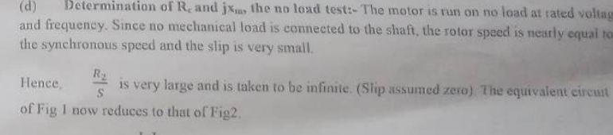
Figure 307.2. Simplified circuit used to interpret the no-load test.
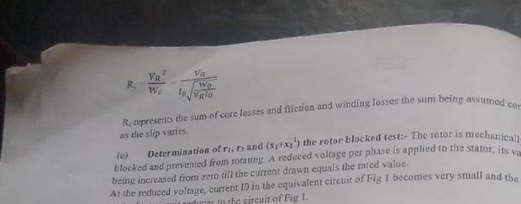
Figure 307.3. Reduced-voltage blocked-rotor test condition.
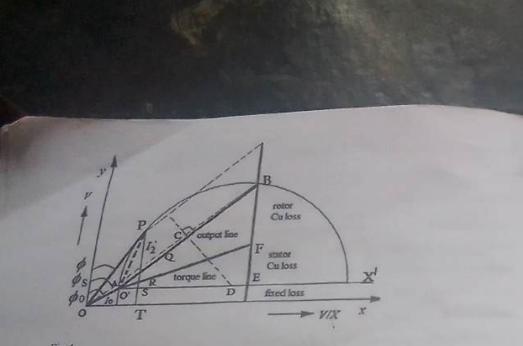
Figure 307.4. Circle-diagram construction for representing operating points.
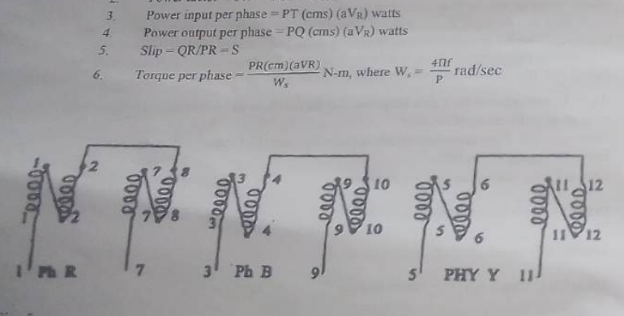
Figure 307.5. Terminal connection reference for the three-phase winding arrangement.
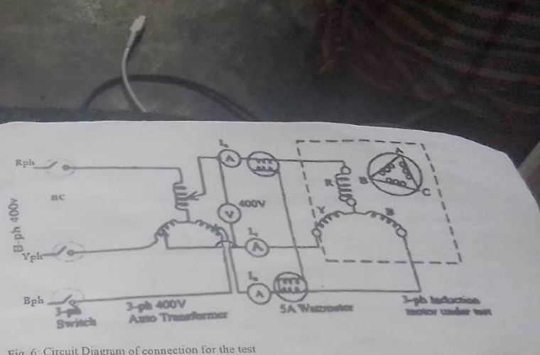
Figure 307.6. Test connection using the two-wattmeter method.
5 · Table of values
Data / table of values
ⓘ
No table is inserted, as requested. The supplied manual has record sheets for the no-load and blocked-rotor tests and for operating points on the circle diagram, but no readings were supplied. Inserting nominal values would undermine the comparison the experiment is meant to teach.
6 · Procedure
Procedure
No-load test
Connect the motor, two wattmeters, ammeters and voltmeter as shown in the approved circuit. Confirm the star or delta terminal links before energising.
Ensure the rotor-blocking pin is removed and the rotor can turn freely. Set the three-phase auto-transformer to zero output.
Switch on the supply and increase the voltage gradually to the rated test value while watching current and machine sound.
Allow the motor to reach steady speed. Record the line voltage, line currents and both wattmeter readings if a results sheet is being completed.
Return the auto-transformer to zero and switch off before changing to the blocked-rotor arrangement.
Blocked-rotor test
Fit the approved blocking pin and confirm that the rotor cannot rotate unexpectedly.
Return the auto-transformer to zero. Switch on the supply and raise the voltage slowly until the specified current, not greater than the machine rating, is reached.
Record voltage, currents and both wattmeter readings. The test is short-duration because the motor cannot produce mechanical output while blocked.
Reduce voltage to zero, switch off and remove the blocking arrangement only when the set is isolated.
Measure the stator DC resistance using the approved low-voltage method.
Use the actual no-load, blocked-rotor and resistance readings to determine equivalent-circuit parameters. The circle diagram and predicted performance should be based on those values.
7 · Precaution
Precautions
Start every test with the auto-transformer at zero.
Never energise the machine with the rotor locked unless the supervisor is present and the voltage is limited.
Keep the blocked-rotor test brief to prevent excessive heating.
Confirm the two wattmeters are connected with correct current-coil and pressure-coil polarities before interpreting a negative indication.
Keep clear of the rotating shaft during the no-load test and never insert the blocking pin while the rotor is turning.
Do not exceed rated line voltage or current, even if a single meter appears to be within range.
8 · Discussion
Discussion
The induction motor is self-starting because the rotating stator field cuts the stationary rotor conductors and induces rotor current. The interaction between this rotor current and the stator field produces torque. The need for slip is therefore fundamental, not a defect. At no load the rotor speed is close to synchronous speed and the slip is small; as mechanical load is added, slip increases enough to induce the rotor current needed to produce the additional torque.
The no-load test and blocked-rotor test deliberately look at opposite ends of the operating range. The first reveals the magnetising and rotational-loss behaviour with little useful shaft output. The second reveals the combined leakage impedance under a current-limited condition. Together with stator resistance, the two tests provide a practical model. The model is approximate because saturation, temperature, frequency-dependent leakage and mechanical losses are not perfectly represented.
The two-wattmeter method is especially useful for a three-phase system because the sum of the two readings gives total real input power for a balanced three-wire load. One reading can become small or negative at low power factor, so the instrument signs must be respected. A circle diagram then offers a visual way to relate an assumed slip to current, power factor, input power and output power. It is a compact engineering tool, but it must not be confused with a direct measurement.
9 · Conclusion
Conclusion
The three-phase induction motor depends on slip to produce rotor current and torque. The no-load and blocked-rotor tests provide the information needed for an approximate equivalent circuit, while the circle diagram predicts how performance changes with slip. Safe voltage control, a brief blocked-rotor test and correct wattmeter connection are essential to obtaining trustworthy results.
10 · Questions asked in the material
Tasks from the manual and answers
Q1.What parameters are required from the equivalent circuit?
The per-phase stator resistance and leakage reactance, rotor-referred resistance and leakage reactance, magnetising reactance and the core-loss / friction-loss component are required according to the chosen model.
Q2.What should be obtained for several operating points?
The manual asks for torque, efficiency, slip, speed, current, power factor, applied voltage, input power and output power per phase, followed by comparison between circle-diagram and equivalent-circuit predictions. Numerical entries are left to actual test data.
Q3.Which graphs are requested?
The manual proposes slip against torque, current, power factor and efficiency. They are not included here because no experimental readings were supplied.
11 · What you have learned
Learning outcome
The practical turns slip into a useful engineering variable. Rather than treating the induction motor as a black box, it shows how voltage, frequency, induced rotor current, losses and shaft output are connected. It also demonstrates why tests and models are complementary: measurements reveal the real machine, while the equivalent circuit helps predict its behaviour.
12 · Special questions
Further questions for discussion
Q1.Why is the rotor frequency low during normal operation?
Rotor frequency is sf. Since normal slip is only a small fraction of unity, the rotor current frequency is much lower than the stator supply frequency.
Q2.Why is a blocked-rotor test performed at reduced voltage?
At standstill the slip is one and the motor would draw a very high current at rated voltage. A reduced voltage limits current to the safe test value while preserving the impedance information needed for the model.
Q3.What limits the accuracy of a circle diagram?
It relies on approximate equivalent-circuit parameters, assumed losses and scale construction. Saturation, temperature and non-linear effects make a real motor deviate from the ideal circle.
13 · Graph
Graph / plot
Not included by request. The requested slip and performance plots require measured or calculated operating points. None were supplied, so no curves have been invented.
Experiment 308
The Transformer
Determining approximate transformer equivalent-circuit parameters from open-circuit and short-circuit tests, then understanding regulation and efficiency.
The aim is to investigate the performance of a single-phase step-down transformer, determine its approximate equivalent-circuit parameters from standard tests, and understand how voltage regulation and efficiency change with load.
2 · Objectives
Objectives
Explain mutual induction and the role of the transformer's shunt and series parameters.
Perform or understand the open-circuit test used to estimate core-loss and magnetising-branch quantities.
Perform or understand the short-circuit test used to estimate series resistance and leakage reactance.
Predict transformer regulation and efficiency for different load currents.
Compare predicted performance with meter readings at a safe unity-power-factor load.
Prove why maximum efficiency occurs when variable copper loss equals nearly constant core loss.
3 · Apparatus
Apparatus and functions
Single-phase step-down transformer, 12 kVA, 220/110 VThe transformer under test; the voltage ratio is a nameplate value, not a substitute for measured terminal voltage.
Variac, 0–270 V, 15 ARaises the test voltage gradually and enables the short-circuit test to be current-limited.
AC voltmetersMeasure primary or secondary voltage over the appropriate low or high range.
AC ammetersMeasure excitation current, short-circuit current or load current within the selected range.
WattmetersMeasure input power in the open-circuit and short-circuit tests; the selected range must suit the expected reading.
Resistive load bank, up to the stated current limitProvides a controlled approximately unity-power-factor load for the performance comparison.
4 · Theory / diagram
Theory of the transformer
A transformer transfers AC power between electrically isolated windings through a changing magnetic flux in a common core. An alternating primary current establishes the flux; the changing flux induces EMF in both primary and secondary windings. For an ideal transformer, voltage ratio follows turns ratio and input power equals output power. In a real transformer, winding resistance, leakage flux, core hysteresis and eddy-current loss cause voltage drop and power loss.
The approximate equivalent circuit represents the series resistance and leakage reactance of both windings and a shunt branch for core loss and magnetising current. Parameters can be referred to either side using the square of the turns ratio. Referring all quantities to one side allows primary and secondary effects to be treated in one circuit.
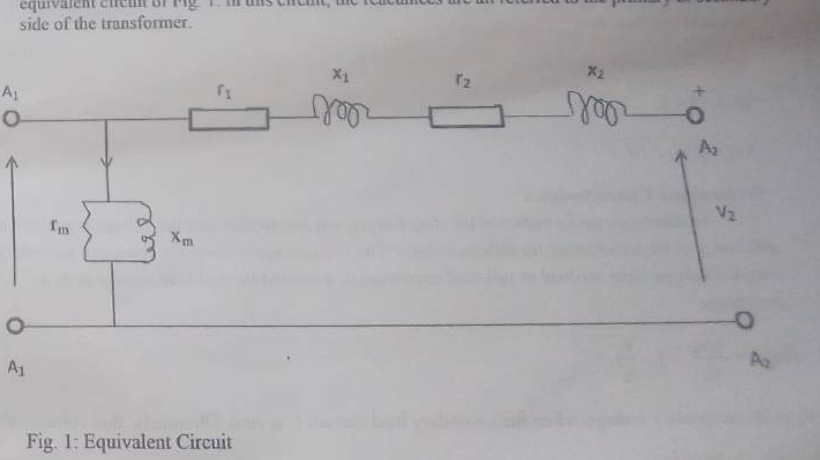
Figure 308.1. Approximate equivalent circuit. The shunt branch represents excitation and core loss; the series branch represents winding resistance and leakage reactance.
Open-circuit test
In the open-circuit test, one winding is left open while the other is supplied at its rated voltage and frequency under supervision. The measured input current is small compared with rated current. The wattmeter reading is mainly core loss, because copper loss due to the small exciting current is small. The measured voltage, current and power factor separate the working and magnetising components of the exciting current and provide the shunt resistance and magnetising reactance of the equivalent circuit.
Short-circuit test
In the short-circuit test, the secondary is shorted through a suitable connection and a low voltage is applied to the other winding. The applied voltage is increased only until the specified current is reached. Because the applied voltage is low, core flux and excitation current are small; most of the measured input power is copper loss and most of the voltage drop is across the series impedance. The test therefore provides the equivalent series resistance and leakage reactance without applying rated voltage to a short circuit.
Regulation and efficiency
Voltage regulation describes the change in secondary terminal voltage when load is applied, usually expressed relative to the full-load or rated-load voltage. A lagging load produces a different drop from a unity-power-factor load because the leakage reactance reacts to the phase of current. Efficiency compares useful output power with input power:
η = Pout / Pin × 100% and regulation ≈ (Vno-load − Vload) / Vload
Core loss is approximately constant at fixed voltage and frequency. Copper loss varies with the square of load current. As load increases, efficiency first improves because fixed losses are spread over more output power, then reduces as copper loss becomes dominant. Maximum efficiency occurs near the condition where variable copper loss equals the constant core loss.
5 · Table of values
Data / table of values
ⓘ
No table is inserted, as requested. The supplied material contains no completed open-circuit, short-circuit or load readings. Do not present nameplate ratings as experimental results. Record measured V, I and wattmeter values separately if the practical is completed.
6 · Procedure
Procedure
Open-circuit test
Identify the transformer terminals and decide which side is supplied for the approved test. Check meter ranges and the Variac position with the supervisor.
Leave the selected secondary winding open and connect the voltmeter, ammeter and wattmeter to the supplied side as shown in the laboratory arrangement.
Set the Variac to zero, switch on, and raise the voltage gradually to the prescribed rated value. Do not exceed the transformer voltage or frequency rating.
Allow the reading to settle and record the applied voltage, exciting current and input power. Return the Variac to zero and isolate the supply.
Short-circuit test
Make the short-circuit connection only with the supply isolated and after the supervisor has checked that the shorting link and meters can carry the expected current.
Set the Variac at zero. Switch on and increase the applied voltage slowly until the specified full-load current is reached; the applied voltage should remain low.
Record the short-circuit voltage, current and wattmeter reading. Reduce to zero and switch off immediately after the reading.
Determine the approximate equivalent series parameters from the actual open- and short-circuit data if calculations are required.
Load performance
Connect the resistive load bank to the secondary with the appropriate meters and protection. Begin with the load removed.
Apply the approved primary voltage and increase the load in safe steps, recording the secondary voltage, load current and input/output power where available.
Compare predicted voltage regulation and efficiency with the measured performance at each load condition.
Remove the load, return the Variac to zero, isolate the transformer and allow it to cool before dismantling.
7 · Precaution
Precautions
Never apply rated voltage to a winding while the other winding is shorted. The short-circuit test uses a low applied voltage and close current monitoring.
Begin and end every Variac operation at zero.
Use meter ranges above the expected value and confirm wattmeter connection before energising.
Do not touch transformer terminals until the supply is isolated; induced voltage may remain present.
Keep the load bank within its current and power rating and watch for heating.
Do not confuse the nameplate voltage ratio with actual loaded secondary voltage; voltage drop is part of what the experiment investigates.
8 · Discussion
Discussion
The open-circuit and short-circuit tests are efficient because they separate two different kinds of transformer behaviour without requiring a full-load test at every possible condition. The open-circuit test exposes the shunt branch: the core must be magnetised even when no useful load is connected. The short-circuit test exposes the series branch: with the secondary shorted and the applied voltage kept low, the dominant effects are winding resistance and leakage reactance.
Voltage regulation is not simply a property of the turns ratio. The secondary voltage falls under load because current flows through winding resistance and leakage reactance. The phase angle of the load current changes the direction and magnitude of the reactive voltage drop, so a lagging motor load generally gives poorer regulation than a unity-power-factor resistive load. This is why transformer selection in a production facility must consider motor starting and power factor, not only the nominal kVA.
Efficiency follows a different balance. Core loss is present whenever the transformer is energised at the design voltage and frequency, even with no external load. Copper loss is small at light load but increases rapidly with current. At low load, fixed core loss is a large fraction of output; at high load, copper loss dominates. The maximum-efficiency condition is therefore a balance between the two loss mechanisms, not necessarily the point of maximum load.
No measured data were supplied, so the report does not claim a numerical regulation, efficiency or parameter value. The correct academic approach is to use the equations and equivalent circuit as a framework, then compare the prediction with the actual meter readings from the laboratory.
9 · Conclusion
Conclusion
The transformer experiment shows how open-circuit and short-circuit tests provide a practical equivalent circuit without loading the transformer at every possible operating point. The shunt branch represents excitation and core loss; the series branch represents winding resistance and leakage reactance. These parameters explain voltage regulation and efficiency, including the important result that maximum efficiency occurs when variable copper loss is approximately equal to constant core loss.
10 · Questions asked in the material
Question from the manual and answer
Q1.Show that transformer efficiency is maximum at a load for which copper losses equal constant core losses.
Let the output power be proportional to load current I, let the approximately constant core loss be Pcore, and let copper loss be I²Req. Efficiency is output divided by output plus Pcore + I²Req. Differentiating with respect to load current, or comparing the increase in useful output with the increase in losses, gives the maximum condition I²Req = Pcore. Thus the variable copper loss equals the approximately constant core loss at maximum efficiency.
Q2.What should be compared in the performance test?
Compare regulation and efficiency predicted from the equivalent circuit with the corresponding values obtained from meter readings at the same load current. Differences should be discussed in terms of winding resistance, temperature, instrument uncertainty and approximation in the model.
11 · What you have learned
Learning outcome
The practical shows how a few carefully chosen tests can reveal the behaviour of a large device that would otherwise be difficult to model directly. It also makes transformer ratings meaningful: kVA, voltage regulation, excitation current and efficiency describe different limits and should not be treated as interchangeable.
12 · Special questions
Further questions for discussion
Q1.Why is the short-circuit test performed at low voltage?
At rated voltage the flux would be excessive while the shorted secondary would draw a destructive current. The low-voltage test reaches the required current with a small flux, making core loss and excitation current relatively negligible.
Q2.Why does the open-circuit wattmeter reading approximate core loss?
The exciting current is small, so winding copper loss is small compared with the hysteresis and eddy-current loss in the core at rated voltage and frequency.
Q3.Why does a lagging load usually worsen regulation?
The leakage reactance produces a voltage drop whose phasor direction depends on current phase. With lagging current, the reactive drop adds unfavourably to the resistive drop at the secondary terminal.
13 · Graph
Graph / plot
Not included by request. The manual proposes regulation and efficiency plots against load current, but no experimental readings were supplied. The equivalent-circuit figure is included because it explains the test, not because it is a result graph.